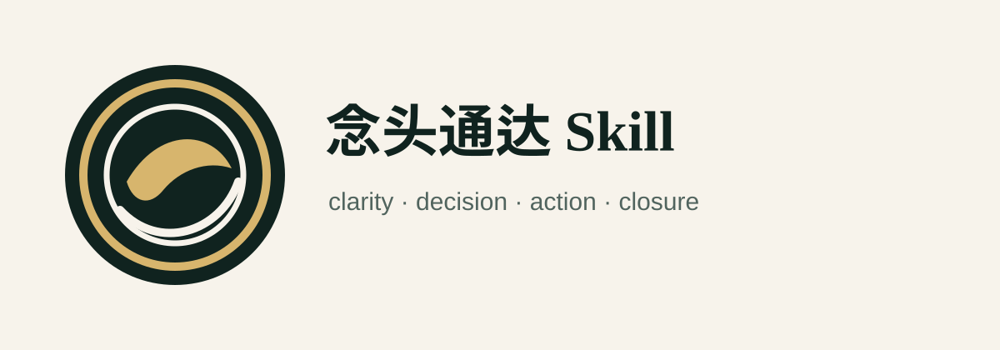

念头通达 Skill
面向 AI Agent 的工程心法：明镜看事实，边界收能动，本心做决断，无住去行动，破境做探针，长线守复利，闭环收念头。
npx niantou-tongda-skill install --target codex --scope user
工程调试通达
产品设计迭代
范围取舍决断
长线项目推进

面向 AI Agent 的工程心法：明镜看事实，边界收能动，本心做决断，无住去行动，破境做探针，长线守复利，闭环收念头。
npx niantou-tongda-skill install --target codex --scope user